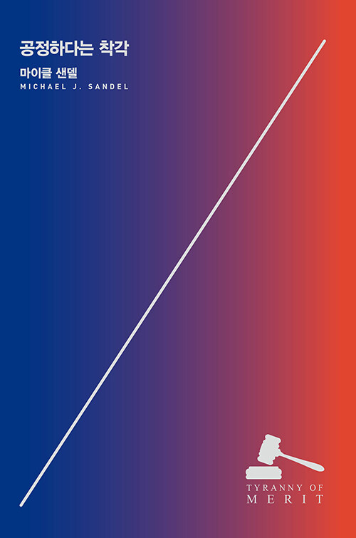
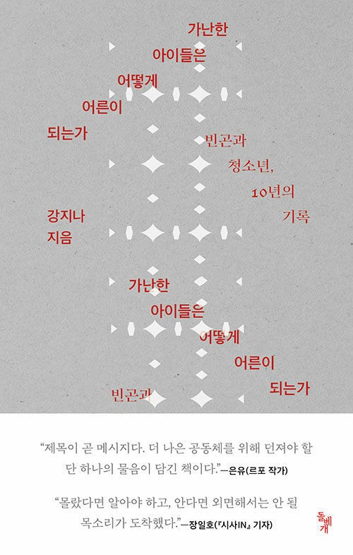
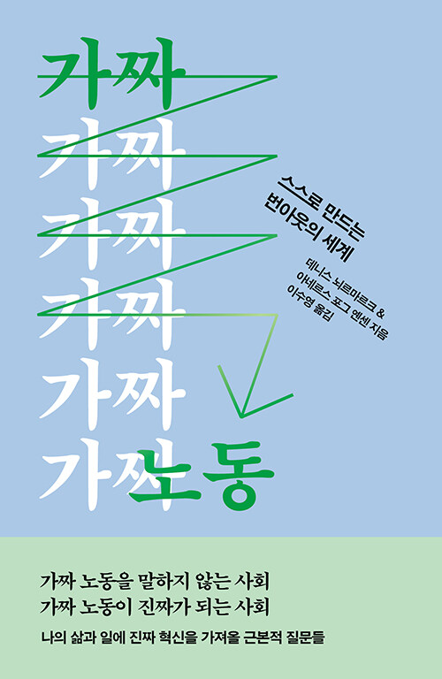
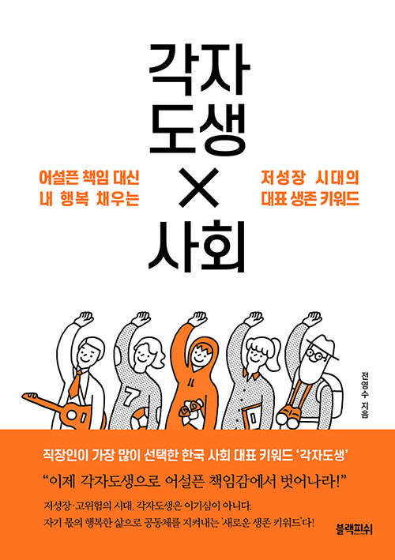
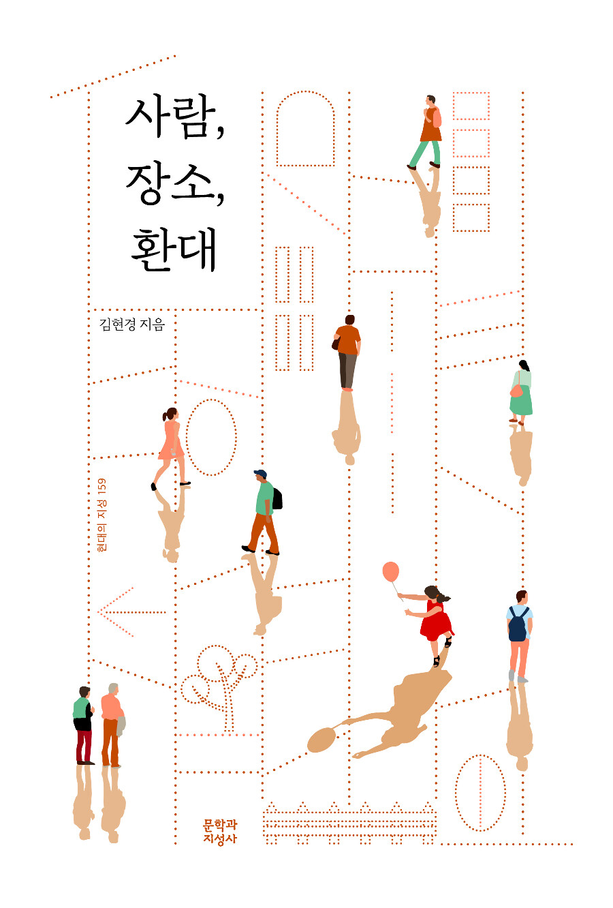
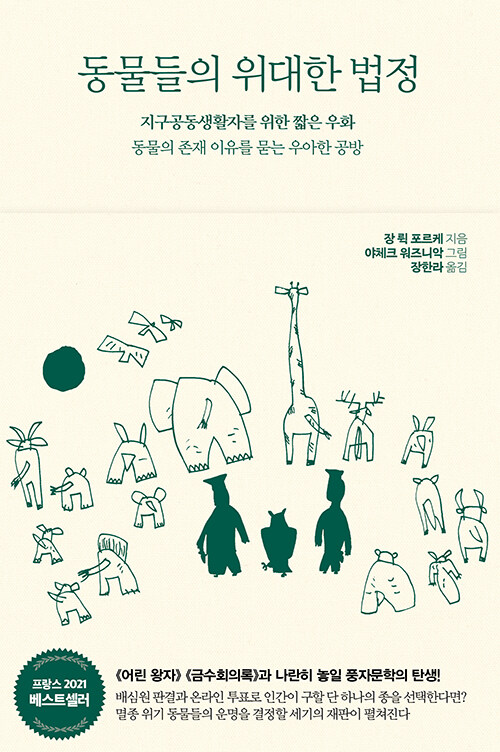
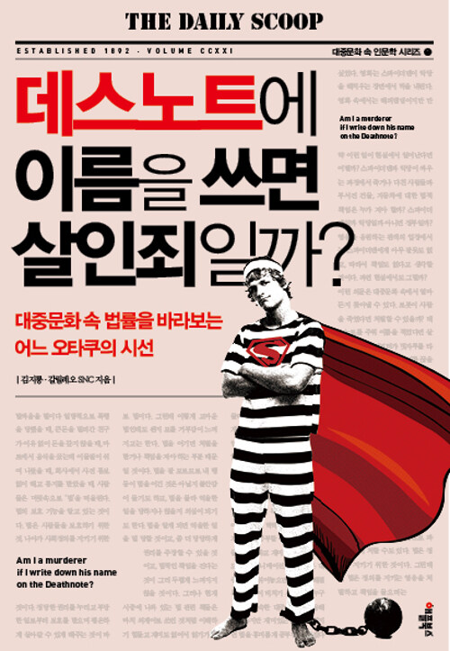

로그인
회원가입
책 읽는 경기도,경기도청 도서관

-

공정하다는 착각: 능력주의는 모두에게 같은 기회를 제공하는가
-
영화를 빨리 감기로 보는 사람들 : 가성비의 시대가 불러온 콘텐츠 트렌드의 거대한 변화
-
다른 방식으로 보기
-

가난한 아이들은 어떻게 어른이 되는가 : 빈곤과 청소년, 10년의 기록
-

가짜 노동 - 스스로 만드는 번아웃의 세계
-
8초 인류 : 산만함의 시대, 우리의 뇌가 8초밖에 집중하지 못하는 이유
-

각자도생 사회
-

사람, 장소, 환대
-

동물들의 위대한 법정 : 지구공동생활자를 위한 짧은 우화, 동물의 존재 이유를 묻는 우아한 공방
-

물고기는 존재하지 않는다 : 상실, 사랑 그리고 숨어 있는 삶의 질서에 관한 이야기
-

팩트풀니스
-

데스노트에 이름을 쓰면 살인죄일까?: 대중문화 속 법률을 바라보는 어느 오타쿠의 시선